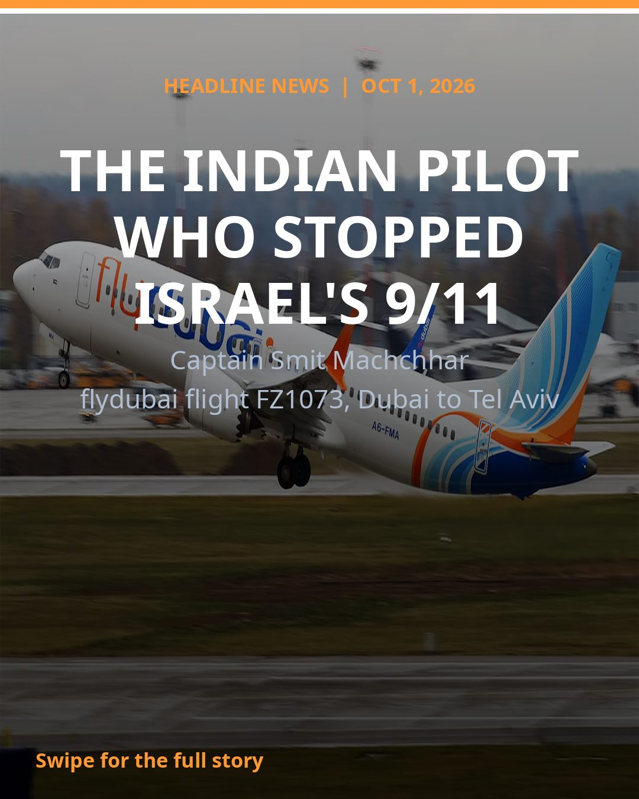
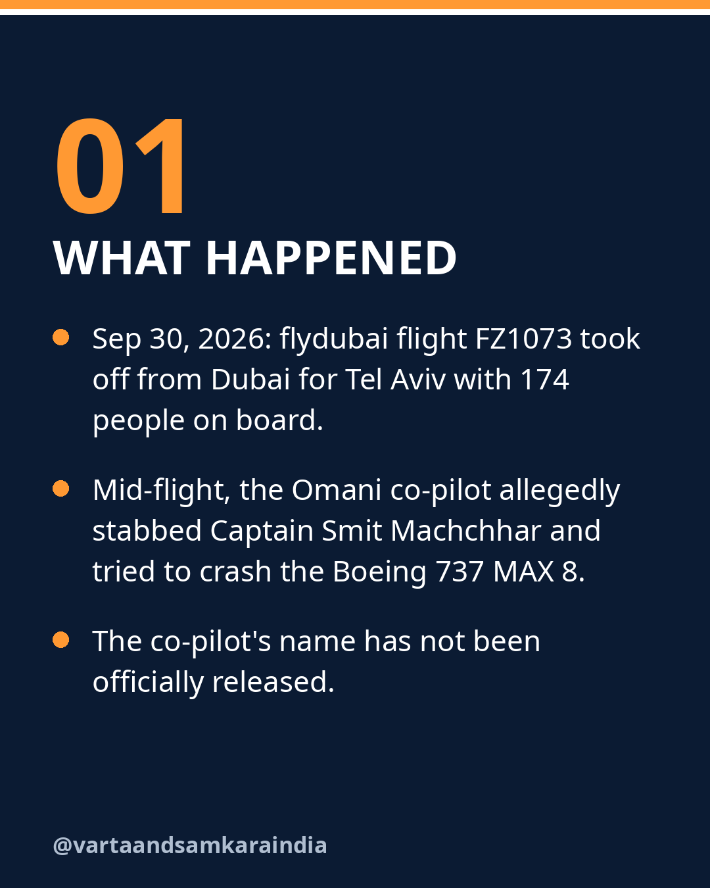
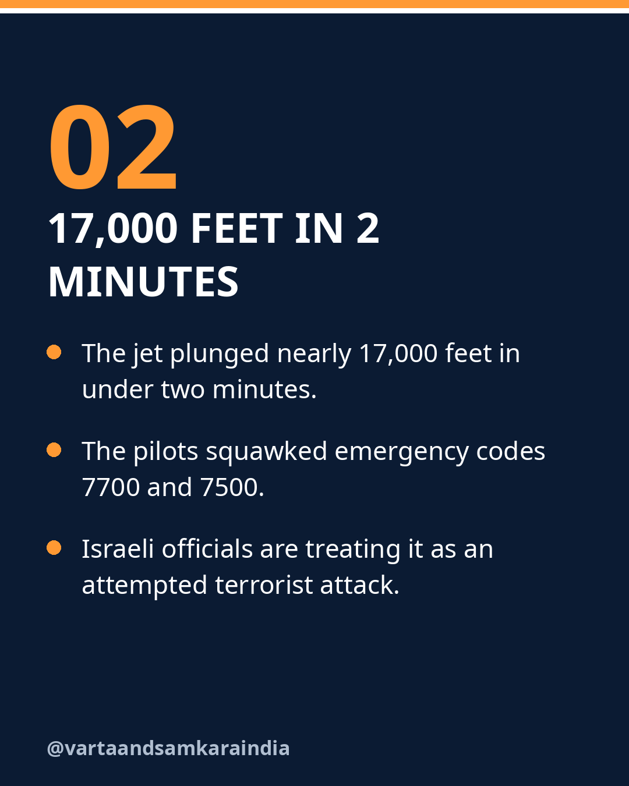
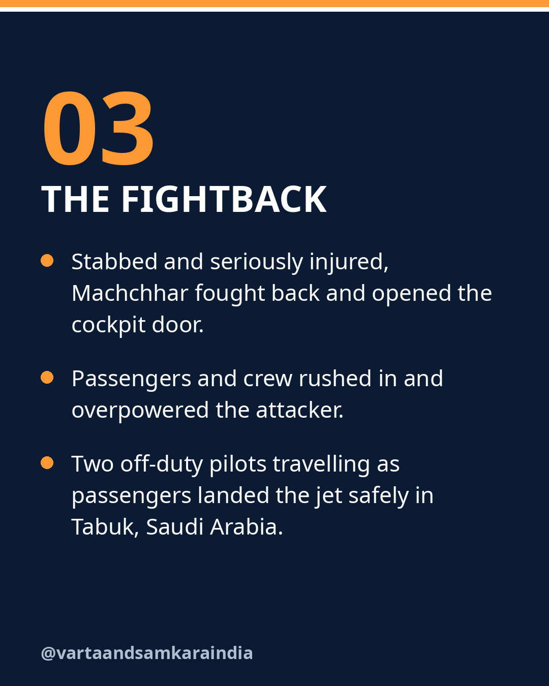
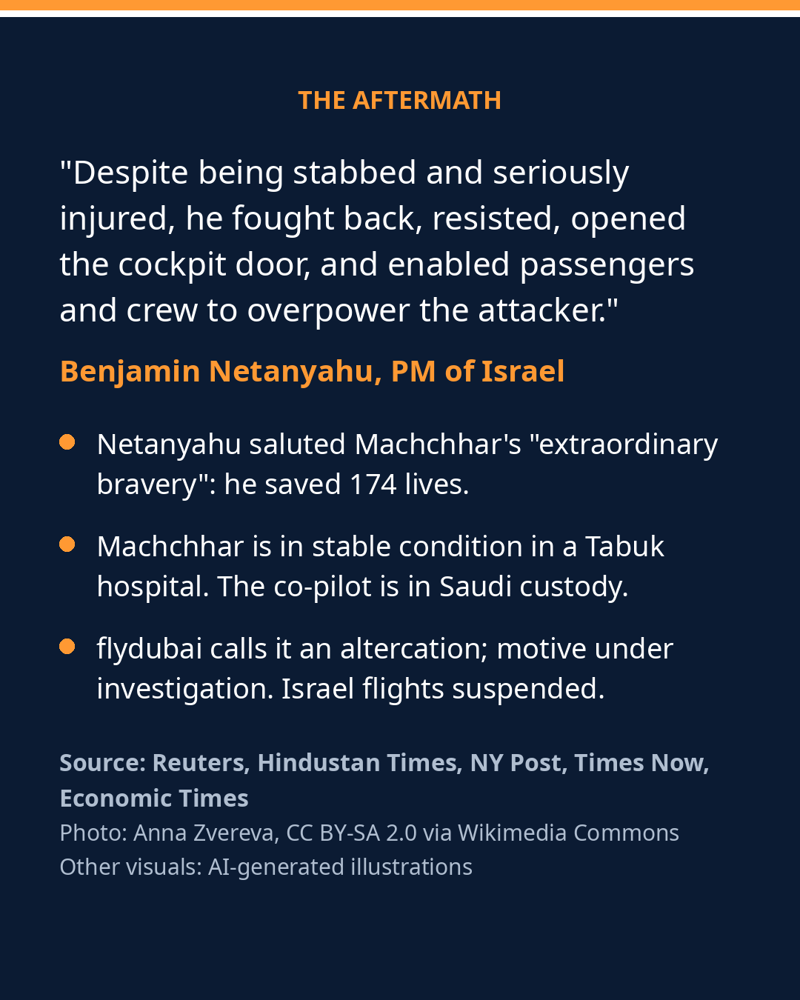

The Indian pilot who stopped what could have been Israel's 9/11.

On September 30, 2026, flydubai flight FZ1073 was flying from Dubai to Tel Aviv with 174 people on board when the Omani co-pilot allegedly stabbed Captain Smit Machchhar and tried to crash the Boeing 737 MAX 8. The jet plunged nearly 17,000 feet in under two minutes.
Despite being stabbed and seriously injured, Machchhar fought back and opened the cockpit door, letting passengers and crew rush in and overpower the attacker. Two off-duty pilots travelling as passengers then landed the aircraft safely in Tabuk, Saudi Arabia.
Israel's PM Benjamin Netanyahu saluted his "extraordinary bravery", saying he saved 174 lives. Machchhar is in stable condition in a Tabuk hospital. The co-pilot is in Saudi custody, and his name has not been officially released. flydubai has called it an altercation and says the motive is under formal investigation.
What was averted
The incident has been described as what could have been Israel's 9/11: a deliberate attempt to bring down a packed airliner over one of the world's most contested regions. That framing captures the scale of the catastrophe that was narrowly avoided, not an established fact about the attacker's intent, which investigators are still working to determine.
For now, what is established is the outcome. An injured Indian captain held the cockpit long enough for others to intervene, two off-duty pilots brought the jet down safely, and all 174 people on board survived.
In pictures




See the original reel / carousel with motion graphics on Instagram.
View on Instagram